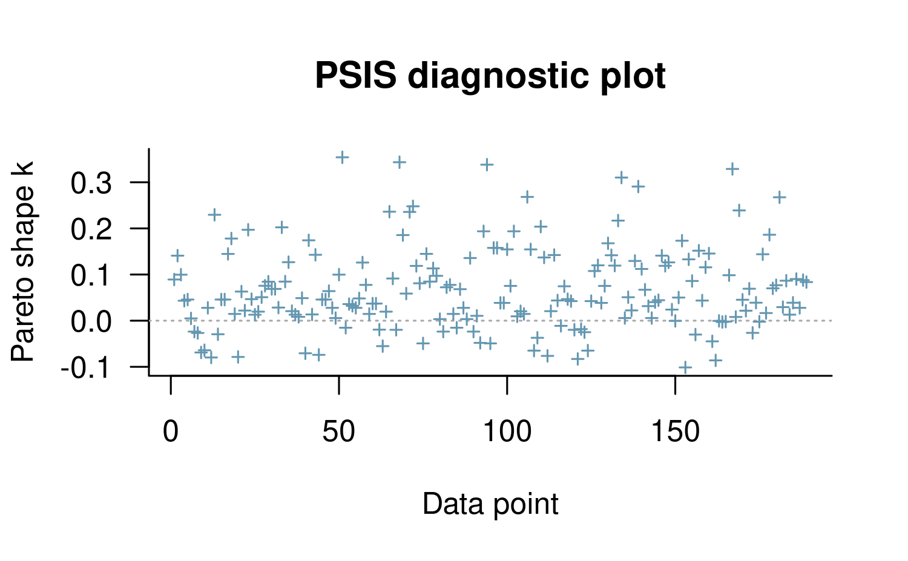

Estimating Ordinal Regression Models with rstanarm
Jonah Gabry and Ben Goodrich
2025-12-03
Source:vignettes/polr.Rmd
polr.RmdIntroduction
This vignette explains how to estimate models for ordinal outcomes
using the stan_polr function in the
rstanarm package.
The four steps of a Bayesian analysis are
- Specify a joint distribution for the outcome(s) and all the unknowns, which typically takes the form of a marginal prior distribution for the unknowns multiplied by a likelihood for the outcome(s) conditional on the unknowns. This joint distribution is proportional to a posterior distribution of the unknowns conditional on the observed data
- Draw from posterior distribution using Markov Chain Monte Carlo (MCMC).
- Evaluate how well the model fits the data and possibly revise the model.
- Draw from the posterior predictive distribution of the outcome(s) given interesting values of the predictors in order to visualize how a manipulation of a predictor affects (a function of) the outcome(s).
Steps 3 and 4 are covered in more depth by the vignette entitled “How to Use the rstanarm Package”. This vignette focuses on Step 1.
One of the strengths of doing MCMC with Stan — as opposed to a Gibbs sampler — is that reparameterizations are essentially costless, which allows the user to specify priors on parameters that are either more intuitive, numerically stable, or computationally efficient without changing the posterior distribution of the parameters that enter the likelihood. Advantageous parameterizations are already built into the Stan programs used in the rstanarm package, so it is just a matter of using these vignettes to explain how the priors work in the context of these reparameterizations.
Likelihood
Ordinal outcomes fall in one of \(J\) categories. One way to motivate an ordinal model is to introduce a latent variable, \(y^\ast\), that is related to the observed outcomes via an observation mechanism: \[y=\begin{cases} 1 & \mbox{if }y^{\ast}<\zeta_{1}\\ 2 & \mbox{if }\zeta_{1}\leq y^{\ast}<\zeta_{2}\\ \vdots\\ J & \mbox{if }\zeta_{J-1}\leq y^{\ast} \end{cases},\] where \(\boldsymbol{\zeta}\) is a vector of cutpoints of length \(J-1\).
Then \(y^\ast\) is modeled as a linear function of \(K\) predictors \[y^\ast = \mu + \epsilon = \mathbf{x}^\top \boldsymbol{\beta} + \epsilon,\] where \(\epsilon\) has mean zero and unit scale but can be specified as being drawn from one of several distributions. Note that there is no “intercept” in this model since the data cannot distinguish an intercept from the cutpoints. However, if \(J = 2\), then \(\zeta_1\) can be referred to as either the cutpoint or the intercept.
A Bayesian can treat \(y^\ast\) as another unknown parameter, although for computational efficiency the Stan code essentially integrates each \(y^\ast\) out of the posterior distribution, leaving the posterior distribution of \(\boldsymbol{\beta}\) and \(\boldsymbol{\zeta}\). Nevertheless, it is useful to motivate the model theoretically as if \(y^\ast\) were just an unknown parameter with a distribution truncated by the relevant element(s) of \(\boldsymbol{\zeta}\).
Priors
If \(y^\ast\) were observed we would simply have a linear regression model for it, and the description of the priors in the vignette entitled “Estimating Linear Models with the rstanarm Package” would apply directly. Another way to say the same thing is conditional on a realization of \(y^\ast\), we have a linear regression model and the description of the priors in the other vignette does apply (and should be read before continuing with this subsection).
The stan_lm function essentially specifies a prior on
\(\boldsymbol{\theta} = \mathbf{R}^{-1}
\boldsymbol{\beta}\), where \(\mathbf{R}\) is the upper triangular matrix
in the QR decomposition of the design matrix, \(\mathbf{X} = \mathbf{Q} \mathbf{R}\).
Furthermore, in stan_lm, \(\sigma_{\epsilon} = \sigma_y \sqrt{1 -
R^2}\) where \(R^2\) is the
proportion of variance in the outcome that is attributable to the
coefficients in a linear model.
The main difference in the context of a model for an ordinal outcome is that the scale of \(y^\ast\) is not identified by the data. Thus, the ordinal model specifies that \(\sigma_{\epsilon} = 1\), which implies that \(\sigma_{y^\ast} = 1 / \sqrt{1 - R^2}\) is an intermediate parameter rather than a primitive parameter.
It is somewhat more difficult to specify a prior value for the \(R^2\) in an ordinal model because \(R^2\) refers to the proportion of variance in the \(y^\ast\) that is attributable to the predictors under a linear model. In general, the \(R^2\) tends to be lower in an ordinal model than in a linear model where the continuous outcome is observed.
The other difference is that an ordinal model does not have a global intercept but rather a vector of \(J-1\) cutpoints. The implied prior on these cutpoints used by the rstanarm package is somewhat novel. The user instead specifies a Dirichlet prior on \(\Pr\left(y=j \, \left.\right| \, \overline{\mathbf{x}} \right)\), which is to say the prior probability of the outcome falling in each of the \(J\) categories given that the predictors are at their sample means. The Dirichlet prior is for a simplex random variable, whose elements are non-negative and sum to \(1\). The Dirichlet PDF can be written as \[f\left(\boldsymbol{\pi}|\boldsymbol{\alpha}\right) \propto \prod_{j=1}^J{\pi_j^{\alpha_j - 1}}, \] where \(\boldsymbol{\pi}\) is a simplex vector such that \(\pi_j = \Pr\left(y=j \, \left.\right| \, \overline{\mathbf{x}} \right)\).
The Dirichlet prior is one of the easiest to specify because the so-called “concentration” hyperparameters \(\boldsymbol{\alpha}\) can be interpreted as prior counts, i.e., prior observations for each of the J categories (although they need not be integers). If \(\alpha_j = 1\) for every \(j\) (the default used by rstanarm) then the Dirichlet prior is jointly uniform over the space of these simplexes. This corresponds to a prior count of one observation falling in each of the \(J\) ordinal categories when the predictors are at their sample means and conveys the reasonable but weak prior information that no category has probability zero. If, for each \(j\), \(\alpha_j = \alpha > 1\) then the prior mode is that the \(J\) categories are equiprobable, with prior probability \(1/J\) of the outcome falling in each of the \(J\) categories. The larger the value of \(\alpha\) the more sharply peaked the distribution is at the mode.
The \(j\)-th cutpoint \(\zeta_j\) is then given by \[\zeta_j = F_{y^\ast}^{-1}\left(\sum_{i=1}^j{\pi_i}\right),\] where \(F_{y^\ast}^{-1}\) is an inverse CDF function, which depends on the assumed distribution of \(y^\ast\). Common choices include the normal and logistic distributions. The scale parameter of this distribution is again \(\sigma_{y^\ast} = 1/\sqrt{1 - R^2}\). In short, by making each \(\zeta_j\) a function of \(\boldsymbol{\pi}\), it allows us to specify a Dirichlet prior on \(\boldsymbol{\pi}\), which is simpler than specifying a prior on \(\boldsymbol{\zeta}\) directly.
Example
In this section, we start with an ordinal model of tobacco
consumption as a function of age and alcohol consumption. Frequentist
estimates can be obtained using the polr function in the
MASS package:
Call:
polr(formula = tobgp ~ agegp + alcgp, data = esoph)
Coefficients:
agegp.L agegp.Q agegp.C agegp^4 agegp^5 alcgp.L alcgp.Q alcgp.C
-0.37 -0.38 -0.24 0.04 -0.04 -0.19 -0.02 0.03
Intercepts:
0-9g/day|10-19 10-19|20-29 20-29|30+
-1.0 0.2 1.3
Residual Deviance: 241.8195
AIC: 263.8195 To obtain Bayesian estimates, we prepend stan_ and
specify the priors:
library(rstanarm)
post0 <- stan_polr(tobgp ~ agegp + alcgp, data = esoph,
prior = R2(0.25), prior_counts = dirichlet(1),
seed = 12345)
print(post0, digits = 1)stan_polr
family: ordered [logistic]
formula: tobgp ~ agegp + alcgp
observations: 88
------
Median MAD_SD
agegp.L -0.2 0.4
agegp.Q -0.2 0.4
agegp.C -0.1 0.3
agegp^4 0.0 0.3
agegp^5 0.0 0.3
alcgp.L -0.1 0.3
alcgp.Q 0.0 0.3
alcgp.C 0.0 0.3
Cutpoints:
Median MAD_SD
0-9g/day|10-19 -1.0 0.2
10-19|20-29 0.2 0.2
20-29|30+ 1.3 0.2
------
* For help interpreting the printed output see ?print.stanreg
* For info on the priors used see ?prior_summary.stanregThe point estimates, represented by the posterior medians, are
qualitatively similar to the maximum-likelihood estimates but are
somewhat shrunk toward zero due to the regularizing prior on the
coefficients. Since these cutpoints are actually known, it
would be more appropriate for the model to take that into account, but
stan_polr does not currently support that.
Next, we utilize an example from the MASS package where low birthweight is the binary outcome of interest. First, we recode some of the variables:
data("birthwt", package = "MASS")
birthwt$race <- factor(birthwt$race, levels = 1:3,
labels = c("white", "black", "other"))
birthwt$bwt <- birthwt$bwt / 1000 # convert from grams to kilograms
birthwt$low <- factor(birthwt$low, levels = 0:1, labels = c("no", "yes"))It is usually a good idea to rescale variables by constants so that all the numbers are in single or double digits. We start by estimating a linear model for birthweight in kilograms, flipping the sign so that positive coefficients are associated with lower birthweights.
post1 <- stan_lm(-bwt ~ smoke + age + race + ptl + ht + ftv,
data = birthwt, prior = R2(0.5),
seed = 12345)
print(post1)stan_lm
family: gaussian [identity]
formula: -bwt ~ smoke + age + race + ptl + ht + ftv
observations: 189
predictors: 8
------
Median MAD_SD
(Intercept) -3.3 0.2
smoke 0.4 0.1
age 0.0 0.0
raceblack 0.4 0.2
raceother 0.4 0.1
ptl 0.2 0.1
ht 0.4 0.2
ftv 0.0 0.0
Auxiliary parameter(s):
Median MAD_SD
R2 0.2 0.0
log-fit_ratio 0.0 0.1
sigma 0.7 0.0
------
* For help interpreting the printed output see ?print.stanreg
* For info on the priors used see ?prior_summary.stanregNext, we estimate an “ordinal” model for the incidence of low
birthweight, which is defined as a birth weight of less than \(2.5\) kilograms. Even though this outcome
is binary, a binary variable is a special case of an ordinal variable
with \(J=2\) categories and is
acceptable to stan_polr. We can think of bwt
as something proportional to \(y^\ast\)
and pretend that it is not observed, forcing us to estimate an ordinal
model.
post2 <- stan_polr(low ~ smoke + age + race + ptl + ht + ftv, data = birthwt,
prior = R2(0.5), prior_counts = dirichlet(c(1,1)),
method = "probit", seed = 12345)
This prior seems to have worked well in this case because none of the points in the plot are above \(0.5\), which would have indicated the the posterior is very sensitive to those observations. If we compare the estimated coefficients,
Linear Ordinal Rescaled
(Intercept) -3.254 -0.535 -4.812
smoke 0.361 0.514 0.534
age -0.003 -0.025 -0.005
raceblack 0.394 0.514 0.582
raceother 0.400 0.530 0.592
ptl 0.154 0.400 0.228
ht 0.368 0.696 0.544
ftv -0.004 -0.005 -0.006they have the same signs and similar magnitudes, with the exception
of the “Intercept”. In an ordinal model where the outcome only has \(J=2\) categories, this “Intercept” is
actually \(\zeta_1\), but it is more
conventional to call it the “Intercept” so that it agrees with
stan_glm when
family = binomial(link = 'probit'). Recall that \(\sigma_{\epsilon} = 1\) in an ordinal
model, so if we rescale the coefficients from a linear model by dividing
by the posterior median of \(\sigma\),
the resulting coefficients are even closer to those of the ordinal
model.
This illustrates the fundamental similarity between a linear model for a continuous observed outcome and a linear model for a latent \(y^\ast\) that generates an ordinal observed outcome. The main difference is when the outcome is continuous and observed, we can estimate the scale of the errors meaningfully. When the outcome is ordinal, we can only fix the scale of the latent errors to \(1\) arbitrarily.
Finally, when \(J = 2\), the
stan_polr function allows you to specify
non-NULL values of the shape and
rate arguments, which implies a “scobit” likelihood where
the probability of success is given by \(F\left(y^\ast \right)^\alpha\), where \(F\left(\right)\) is the logistic CDF and
\(\alpha > 0\) is a skewing
parameter that has a gamma prior with a given shape and
rate. If \(\alpha \neq
1\), then the relationship between \(y^\ast\) and the probability of success is
asymmetric. In principle, it seems appropriate to estimate \(\alpha\) but in practice, a lot of data is
needed to estimate \(\alpha\) with
adequate precision. In the previous example, if we specify
shape = 2 and rate = 2 to reflect the prior
beliefs that \(\alpha\) is expected to
be \(1\) but has a variance of \(\frac{1}{2}\), then the loo
calculation yields many Pareto shape parameters that are excessively
large. However, with more than \(189\)
observations, such a model may be more fruitful.
Conclusion
The posterior distribution for an ordinal model requires priors on
the coefficients and the cutpoints. The priors used by the
stan_polr function are unconventional but should work well
for a variety of problems. The prior on the coefficients is essentially
the same as that used by the stan_lm function but omits a
scale parameter because the standard deviation of the latent \(y^\ast\) is not identified by the data. The
cutpoints are conditionally deterministic given a simplex vector for the
probability of falling in each of the \(J\) ordinal categories given that the
predictors are at their sample means. Thus, a Dirichlet prior — which is
relatively easy to specify and has a good default of jointly uniform —
on this simplex completes the posterior distribution.
This approach provides an alternative to stan_glm with
family = binomial() even if the outcome variable has only
two categories. The stan_glm function has more options for
the prior on the coefficients and the prior on the intercept (which can
be interpreted as the first cutpoint when \(J
= 2\)). However, it may be more difficult to obtain efficient
sampling with those priors.